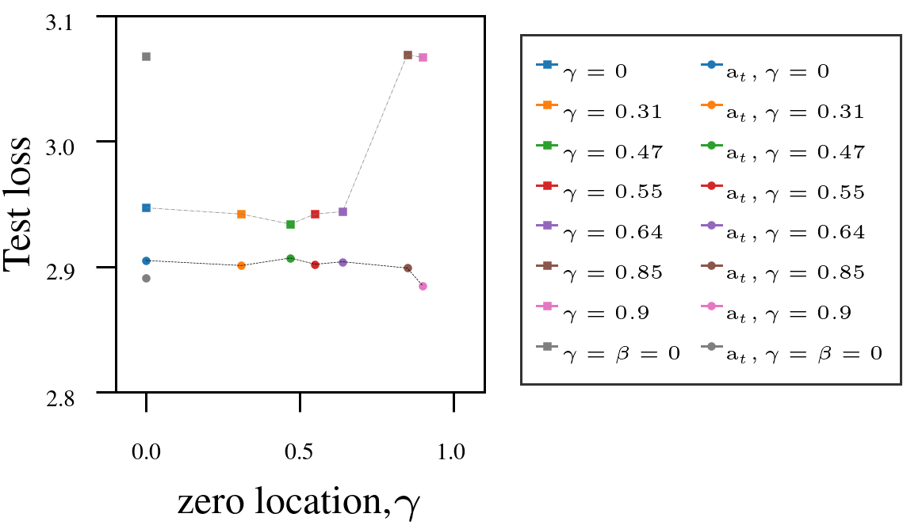

AutoSGM
Connecting the dots … HB, NAG, Adam.
Page created: Sep 11 2025 at 12:00 AM
Table of contents
Momentum-based stochastic gradient methods such as Polyak’s Heavy Ball (PHB), Nesterov’s Accelerated Gradient (NAG), and Adam dominate deep learning optimization.
They are often treated as separate algorithms, but in our recent work, we show they are all special cases of a single signal-processing (DSP) structure. The framework that allows us to do this is called the Automatic Stochastic Gradient Method (AutoSGM) framework.
AutoSGM reframes these stochastic gradient optimizers through the lens of a first-order lowpass filter applied to the stochastic gradient, and the existence of an optimal iteration-dependent learning rate choice. The AutoSGM framework reveals:
- the first-order filtering mechanics behind what has been called momentum.
- that we can derive an optimal, iteration-dependent learning rate choice that involves moment estimation.
- that the smoothing effect of the first-order filter is a lowpass regularization of the loss surface.
All algebraic operations are sample-by-sample (elementwise) unless otherwise stated. The shorthand notation \((t,i)\) denotes the \(i\)-th element of a vector at iteration \(t\).
üåÄ The Core Update Rule
The classic stochastic gradient method (SGM) updates parameters as:
\[\mathbf{w}(t+1,i) = \mathbf{w}(t,i) - \alpha(t,i) \, \mathbf{g}(t,i)\]where:
- \(\mathbf{g}(t,i) = \nabla f(\mathbf{w}(t,i))\) is an unbiased stochastic gradient component,
- \(\alpha(t,i)\) denotes the learning rate at iteration \(t\), determined via a selected oracle function.
In AutoSGM, we replace the stochastic gradient with a smoothed version:
\[\mathbf{w}(t+1,i) = \mathbf{w}(t,i) - \alpha(t,i) \, H_{\beta,\gamma}(\mathbf{g}(t,i))\]Here, \(H_{\beta,\gamma}\) is a first-order filter with transfer function:
\[H(z) = \eta \, \frac{1 - \gamma z^{-1}}{1 - \beta z^{-1}}, \quad 0 \le \beta < 1, \ \gamma < \beta\]The time (iteration)-domain realization is:
\[\mathbf{v}(t,i) = \beta\,\mathbf{v}(t-1,i) + \eta\,(\mathbf{g}(t,i) - \gamma\,\mathbf{g}(t-1,i))\]See this page for the learning dynamics of the stochastic gradient update in this framework.
An interactive analysis of AutoSGM, using an extremely simple problem setup, can be found here asgm_qsim. This allows us to clarify that what is called momentum is better viewed as a first-order smoothing filter✅, and in particular derive Nesterov’s Accelerated Gradient (NAG) from first principles as a point in the filter design space where we set \(\gamma=\tfrac{\beta}{1+\beta}\).
üìê An Optimal Learning Rate
Assuming that both the training objective function and its gradient are Lipschitz continuous (Bottou et al., 2018), and that the objective function admits an underlying log-likelihood interpretation.
To derive an optimal learning rate, let \(\mathbb{E}\) denote expectation with respect to a model distribution \(p(\mathbf{w})\) parameterized by \(\mathbf{w}\). For an explicitly defined log-likelihood objective \(f=\ln p(\mathbf{w})\), the score-function identity, tells us that the expected gradient is zero for all \(\mathbf{w}\), not only at the optimum (Moon & Stirling, 2000; Van Trees et al., 2013). Formally, \(\mathbb{E}[\mathbf{g}(t,i)] = 0\).
In practice, many widely used training objectives admit log‚Äëlikelihood interpretations but differ from this simplified model.
Using this model, define \(\mathbf{e}(t,i) = \mathbf{w}(t,i) - {\mathbf{w}(i)}^\star\) as the parameter error, the gap between current weight and a local optimum. Minimizing the expected squared error \(\mathbb{E}[\mathbf{e}(t+1,i)^2]\), at iteration \(t\), yields a closed-form expression for an iteration-dependent optimal learning rate
\[\alpha(t,i)^\star = \frac{\mathbb{E}[\mathbf{w}(t,i) \,\mathbf{g}(t,i)]}{\mathbb{E}[\mathbf{g}(t,i)^2]},\]This learning rate is the ratio of two expectation functions:
- numerator term is the partial-correlation between the weight and gradient.
- denominator term is the second moment (variance) of the gradient.
This learning rate choice is locally-optimal at each iteration. In general, for our actual training objective functions, these expectations are unknown. Nevertheless, the learning rate can be realized in practice by iteratively approximating the expectations in the numerator and denominator terms.
Practical Approximation
The derived optimal learning‚Äërate function can be realized using standard adaptive‚Äëfiltering techniques (Diniz, 2020; Haykin, 2014), which involve the following steps:
- Expectations are estimated with exponential moving averages (EMA).
- For numerical stability, we use the normalized gradient form.
- As a safety margin, the locally-optimal iteration-dependent learning rate estimate is modulated with a small \(\mu\digamma(t)\) which acts as its trust-region variable.
Let \(0 \le \mu\digamma(t) \le 1\), where \(\mu > 0\), \(0\le \digamma(t) \le 1\) is a learning-rate schedule. Define
\[\bar{\mathbf{g}}(t,i) = \frac{\mathbf{g}(t,i)}{\sqrt{\mathbb{E}[\mathbf{g}(t,i)^2]}},\]where \(\bar{\mathbf{g}}(t,i)\) is the normalized gradient scaled to its unit root-mean-square (RMS) value. The learning rate becomes
\[\alpha(t,i) = \mu \digamma(t)\, \frac{\mathbb{E}[\mathbf{w}(t,i) \,\bar{\mathbf{g}}(t,i)]}{\sqrt{\mathbb{E}[\mathbf{g}(t,i)^2]}}.\]EMA Realizations
Track the denominator term (moment estimation):
\[\mathbf{b}(t,i) = \beta_b \,\mathbf{b}(t-1,i) + (1 - \beta_b) \,\mathbf{g}(t,i)^2,\]and define the RMS-normalizer:
\[\mathbf{d}(t,i) = \sqrt{\frac{\mathbf{b}(t,i)}{1 - \beta_b^t}} + \epsilon\]‚Üí bias-corrected RMS-norm with small \(\epsilon\) (Honig & Messerschmitt, 1984) to prevent division by zero.
Track the numerator term:
\[\mathbf{a}(t,i) = \beta_a \,\mathbf{a}(t-1,i) + \mu \,\mathbf{w}(t,i) \,\bar{\mathbf{g}}(t,i)\]→ a naive running estimate of the weight–gradient correlation.
Finally:
\[\alpha(t,i) = \digamma(t)\,\frac{\mathbf{a}(t,i)}{\mathbf{d}(t,i)}.\]\[\alpha(t,i) = \mu\digamma(t)\,\frac{1}{\mathbf{d}(t,i)}.\]Note: This learning rate function reduces to only adaptive moment estimation when \(\mathbb{E}[\mathbf{w}(t,i) \,\bar{\mathbf{g}}(t,i)]\) is replaced by a fixed constant \(1\).
Robust EMA estimation
In practice, one of the essential properties of a statistical estimator is robustness. It describes the resistance property of the estimator against outliers. The robustness of an estimator can be expressed using its breakdown point (bigger is better). The breakdown point is the proportion of corrupted inputs that the estimator can handle before outputing an incorrect estimate, and it cannot exceed $0.5$ (Huber, 1992). The breakdown point of the EMA is 0 (Zoubir et al., 2018). This implies only 1 corrupt input sample-point is needed to significantly distort its estimate.
The denominator EMA term of the learning rate can be interpreted as a norm of the input gradient signal (Boyd & Barratt, 1991), serving as a measure of its energy or magnitude. By normalizing the update through division by this gradient norm, the learning rule becomes scale‚Äënormalized, always adjusted relative to the effective strength of the input. As a result, even when the squared gradient input to the denominator EMA is corrupted by heavy‚Äëtailed noise or occasional outliers, the normalization absorbs these effects. Extreme values in the gradient are proportionally scaled down, preventing instability and ensuring that the update remains bounded and robust.
However, the same cannot be said for the numerator EMA term. Whereas the denominator term acts as a norm of the gradient signal and thus provides scale‚Äënormalized robustness, the numerator term directly involves the correlation between a weight and a gradient component. This correlation is inherently more sensitive to noise and outliers: if the weight-gradient product is corrupted, the output of the numerator EMA can be distorted in both magnitude and sign. Unlike the denominator, which absorbs extreme values through normalization, the numerator reflects them directly, potentially leading to erratic updates. In practice, this means that while the denominator stabilizes the learning rate by bounding its scale, the numerator remains the primary channel through which input variability and heavy‚Äëtailed disturbances distort the update step.
EMAs assume a well-behaved noise model (Huber, 1992). Heavy‚Äëtailed stochastic correlations, noisy sign flips and occasional magnitude spikes can break this assumption (Zoubir et al., 2018) leading to breakdown.
A common empirical safeguard approach in robust estimation to handle such problems are concentration inequality techniques that detect if an input is an outlier, remove the detected outlier then replace with an appropriate value.
In this case, we want the estimate of the numerator EMA to remain positive, well‚Äëbounded, and avoid corruptions due to noisy, heavy-tailed inputs. In other words, we want to robustify the partial correlation estimate from the EMA without distorting the bulk of the signal observed via its input \(\mathbf{u}(t,i) = \mathbf{w}(t,i) \, \bar{\mathbf{g}}(t,i)\)
1. Input Clipping
Heavy-tailed gradient noise statistics induce misleading spikes that can dominate the EMA’s estimate over many iterations by increasing its bias from the true mean estimate. Since, we do not know the probability distribution, Markov’s inequality gives a rationale for how often large such values can occur. The inequality
\[\mathbb{Pr}[|u| \ge c\,\mathbb{E}[|u|] ] \le \frac{1}{c},\]relates how large the magnitude of \(u\) can be relative to its expected magnitude. Huberisation (Zoubir et al., 2012; Menon et al., 2020) is a practical way to robustly mitigate such heavy-tailed values via Markov’s inequality. Instead of naively passing an input \(u\) though the EMA, the Huber clipping function \(\psi_{c}(u)\) can be used to constrain the most extreme outliers (\(c \times\) the expected scale) before they enter the EMA, while avoiding signal dead-zones and allowing moderate estimates to pass through untouched relative to its expected scale.
\[\psi_{c}(u) = \begin{cases} u, & |u| \le c\,\mathbb{E}[|u|] \\ \mathrm{sign}(u) \cdot c\,\mathbb{E}[|u|], & |u| > c\,\mathbb{E}[|u|]. \end{cases}\]Here, \(u\) denotes the instantaneous input, and \(c\) is a scale multiplier used to clip only extreme outliers relative to the expected scale. For example, setting \(c=4\) can be viewed as a prior that the probability \(p\) of its magnitude \(|u|\) exceeding four times its mean is no more than \(25\%\). Equivalently, the probability that \(|u|\) remains below this threshold is at least \(1-p=75\%\). Therefore, the interval defined by the 25–75% quantiles captures the bulk of the distribution, while the clipping function suppresses only the most extreme values. This yields a more robust EMA estimator that is less sensitive to heavy‑tailed noise and spurious magnitude spikes.
Using the instantaneous partial correlation \(\mathbf{u}(t,i)\), we can iteratively estimate its expected scale, via the EMA estimate
\[\hat{\mathbf{u}}(t,i) = \beta_a \, \hat{\mathbf{u}}(t-1,i) + (1 - \beta_a)\,|{\mathbf{u}}(t,i)|,\]where \(\hat{\mathbf{u}}(t,i)\) adapts to the typical scale of \(\mathbf{u}(t,i)\) in each layer.
2. Output Clipping and Max-Normalization
Estimation noise can flip signs of the numerator estimate, artificially inflating or deflating the learning‑rate ratio and producing unstable or vanishing steps. The input‑clipping strategy does not account for spurious sign flips that slip through the estimator’s input. When the estimate turns negative, clipping to zero stalls progress entirely. Since the global learning‑rate constant \(\mu\) already serves as a safety margin (a trust‑region), a more robust approach is to design a trust‑region safeguard around \(\mu\) that preserves sign information while bounding magnitude.
Thus, we want to ensure the numeric estimate for the partial-correlation stays within a predictable, and reasonable range, while ensuring \(\alpha(t,i) \ge 0\). From the inequality \(0 \le (\mathbf{w}(t,i)-\bar{\mathbf{g}}(t,i))^2\), we have that \(\mathbf{w}(t,i) \,\bar{\mathbf{g}}(t,i) \ \le\ \frac{1}{2}\,\big(\mathbf{w}(t,i)^2 + \bar{\mathbf{g}}(t,i)^2\big),\) and so obtain the max-bound
\[\mathbb{E}[\mathbf{w}(t,i) \,\bar{\mathbf{g}}(t,i)] \le \,\mathbb{E}[\mathbf{w}(t,i)^2] + \mathbb{E}[\bar{\mathbf{g}}(t,i)^2] = \mathbb{E}[\mathbf{w}(t,i)^2] + 1.\]\(\mathbb{E}[\mathbf{w}(t,i)^2]\) can be realized by maintaining an EMA estimate
\[\mathbf{s}(t,i) = \beta_a \,\mathbf{s}(t-1,i) + (1 - \beta_a) \,\mathbf{w}(t,i)^2,\]and the max-normalizer is \(\bar{\mathbf{s}}(t,i) = 1 + \mathbf{s}(t,i)\).
Taken together, using \(\bar{\mathbf{s}}(t,i)\) and \(\mathbf{d}(t,i)\), these practical clipping and normalization techniques, help the partial correlation estimate from the EMA to remain within a predictable dynamic range, preventing large values:
\[\tilde{\mathbf{a}}(t,i) = \beta_a \, \tilde{\mathbf{a}}(t-1,i) + \mu\, \bar{\mathbf{s}}(t,i)^{-1}\cdot{\psi_{c} (\mathbf{u}(t,i))}\] \[\mathbf{a}(t,i) = \max\bigl(0,\, \min\bigl( |\tilde{\mathbf{a}}(t,i)|, \, \mu\,\bar{\mathbf{s}}(t,i) \bigr) \bigr).\]3. Layer-wise smoothing
To account for intra-layer structure and variability in neural networks, we observed that replacing the raw estimates with their layerwise mean, ensured more numerically stable parameter adaptation within each layer. Specifically, for a given layer \(\ell\), with parameter size \(n_\ell\), the numerator update is averaged as
\[\mathbf{a}(t,i) ‚Üê \frac{1}{n_\ell} \sum_{i=1}^{n_\ell} \mathbf{a}(t,i).\]üß© Unifying PHB, NAG, and Adam
By choosing \(\beta, \gamma, \alpha(t,i)\) appropriately, AutoSGM recovers
| Algorithm | \(\beta\) | \(\gamma\) | \(\eta\) | \(\alpha(t,i)\) |
|---|---|---|---|---|
| Basic | \(0\) | \(0\) | \(0\) | \(\mu \digamma(t)\) |
| PHB | \(‚úì\) | \(0\) | \(1\) | \(\mu \digamma(t)\) |
| NAG | \(‚úì\) | \({\beta}/{(1+\beta)}\) | \((1+\beta)\) | \(\mu \digamma(t)\) |
| Adam | \(‚úì\) | \(0\) | \(1-\beta\) | \({\mu} \digamma(t) \cdot{\mathbf{d}(t,i)}^{-1}\) |
üéØ Lowpass Regularization
Incorporating momentum is known to practically help stabilize learning dynamics and avoid shallow local minima (Haykin, 2008).
In the paper, we use the impulse response of the filter to show that smoothing the gradient (also called momentum) is approximately equivalent to smoothing the loss surface:
This Lowpass regularization due to smoothing the gradient reflects the stabilized training effect of:
- reduced noise in the gradient updates,
- improved convergence to flatter local minima,
often observed.
üìä Key Empirical Findings
Using Adam as a fixed-numerator baseline for the learning rate, we tested the AutoSGM framework using our iteration-dependent learning-rate realization on CIFAR-10 (ViT, ResNet) and language modeling (GPT-2 on WikiText and Shakespeare):
- Tuning the filter’s zero \(\gamma\) improved performance in most cases.
- Iteration-dependent learning rate numerator (circled dots) outperformed fixed numerator (squared dots).
1. GPT-2 on Shakespeare-char: ~32% lower test loss over fixed-numerator baseline.
 |  |
2. VIT on CIFAR10.
 |  |
3. ResNet18 on CIFAR10.
 |
4. GPT-2 on WikiText-103.
 |  |
üèÅ Conclusion
AutoSGM offers a unified, interpretable, and tunable framework for what has traditionally been referred to as momentum-based optimization.
We can operate PHB, NAG, and Adam as points in the AutoSGM parameter space.
Overall AutoSGM is a foundational framework for studying stochastic gradient algorithms, enabling systematic separation of filter design, automatic learning-rate function choices and the non-unique implementations present in current methods.
üí° Takeaway: If you have been switching between Adam, NAG, and PHB, you might not need to. They are all part of the same family. AutoSGM gives you the structure or map.
- Bottou, L., Curtis, F. E., & Nocedal, J. (2018). Optimization Methods for Large-Scale Machine Learning. SIAM Review, 60(2), 223–311.
- Moon, T. K., & Stirling, W. C. (2000). Mathematical Methods and Algorithms for Signal Processing. Prentice Hall.
- Van Trees, H. L., Bell, K. L., & Tian, Z. (2013). Detection Estimation and Modulation Theory, Detection, Estimation, and Filtering Theory, Part I (2nd ed.). Wiley.
- Diniz, P. S. R. (2020). Adaptive Filtering: Algorithms and Practical Implementation (5th edition). Springer International Publishing. https://doi.org/10.1007/978-3-030-29057-3
- Haykin, S. (2014). Adaptive Filter Theory (5th, intern.). Pearson.
- Honig, M. L., & Messerschmitt, D. G. (1984). Adaptive Filters: Structures, Algorithms and Applications. Kluwer Academic Publishers.
- Huber, P. J. (1992). Robust Estimation of a Location Parameter. In S. Kotz & N. L. Johnson (Eds.), Breakthroughs in Statistics: Methodology and Distribution (pp. 492–518). Springer. https://doi.org/10.1007/978-1-4612-4380-9_35
- Zoubir, A. M., Koivunen, V., Ollila, E., & Muma, M. (2018). Robust Statistics for Signal Processing (1st ed.). Cambridge University Press. https://doi.org/10.1017/9781139084291
- Boyd, S., & Barratt, C. (1991). Linear Controller Design: Limits of Performance. Prentice Hall.
- Zoubir, A. M., Koivunen, V., Chakhchoukh, Y., & Muma, M. (2012). Robust Estimation in Signal Processing: A Tutorial-Style Treatment of Fundamental Concepts. IEEE Signal Processing Magazine, 29(4), 61–80.
- Menon, A. K., Rawat, A. S., Reddi, S. J., & Kumar, S. (2020). Can Gradient Clipping Mitigate Label Noise? Proceedings of the 8th International Conference on Learning Representations.
- Haykin, S. (2008). Neural Networks and Learning Machines (3rd edition). Pearson.